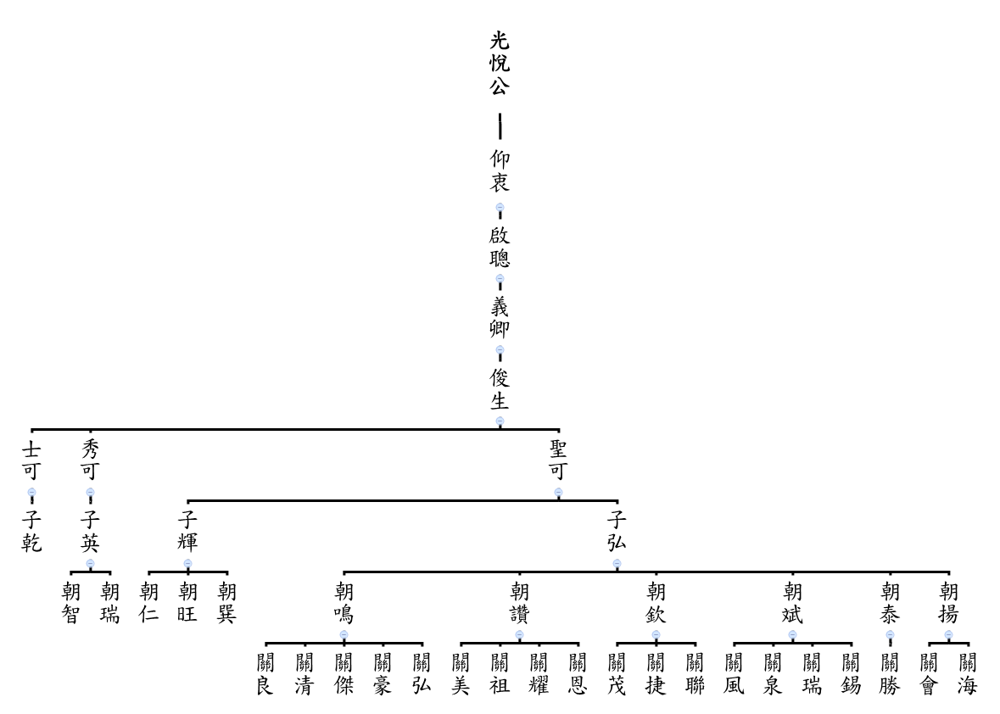

前言
族譜亦即家譜，自西周以來，我國即已建立家譜之傳統與風氣。我國向以家為社會之基本單位，也是個人人生發展之起點，因此家族在中國社會史上佔有關鍵的地位，重要性也往往高於個人之上，甚且高於國家之上，如歷代王朝總是以某姓氏為主導；而古代社會結構裡，家族淵源與其族裔之社會地位與發展機會息息相關，如魏晉南北朝起，九品官人法之產生，政府舉才任用均先訪查其家譜，參閱其門第以為定奪，所以國有歷史，家亦有歷史，自古而然，也使中國歷史上家譜（族譜）之撰修非常豐富，卻又於各朝代遞衍過程中常因戰亂、遷徙或政治因素被銷毀而大量流失。時移勢遷，現今已進入21世紀，在我們生活的台灣家庭中，族譜已非如往昔之盛行，畢竟在台灣除了原住民外，漢族均來自中國大陸閩、粵省分，原本即有族譜傳家之習，無奈日本人統治台灣時期亦曾有打壓族譜之舉，所以我們今日可見之完整族譜並不多。 我張氏渡台祖朝欽朝讚朝鳴公渡台迄今已歷273年，派下族裔繁衍根深葉茂，人丁旺盛，更重要者為來台先祖於台灣興家落戶之際，仍不忘凝聚家族向心力，以各種形式力行緬懷祖先，奉祀祖先，傳承祖德之使命，其間除了張家祠之創建，三大祭祀公業之成立以外，於民國45年由朝欽公派下桂樓公發起，紹松公等手書編纂之渡台後第一本族譜彌足珍貴，嗣依據該族譜於民國85年由朝鳴公派下紹營宗長發起帶領三大房宗親編修族譜，是為第二次族譜編纂，此次再於102年底由三大房宗長共同發起編修，並由朝鳴公派下紹郎、陳基宗長主持編輯工作，對於我張氏家族歷史做更周詳的彙整意義重大，個人在此略述心得感言： 一、 祖先或宗親是抽象的概念，我們祭祖、謁祖或膜拜本質上是每一個人心靈的活動，透過祖墳、神主牌位、宗祠等為抽象概念提供具體化的媒介，也才使祖先的存在與我們現世的存在產生聯結，族譜便是這種聯結的地圖，有了族譜使我們感到家族是活的，而且綿延不絕，生生不息。 二、 我族張氏渡台214年後始有族親手撰族譜，實屬難能可貴，但短短70頁之族譜恐怕僅能記錄二百餘年歲月之萬一，其中絕大部分先祖在台之經歷事件均已散佚，不復可得，殊為可惜。 三、 今日因科技發達，交通無遠弗屆，親族無限擴散，相對之下親族互動唯賴有心與主動，此次編修族譜亦朝向數位化發展，希望能克服空間上遠距阻隔，提供有心族親新的互動平台，期望未來可充實族譜中人與事之素材，為下一次編修提供骨與肉，所謂往者已矣，來者可追也。 四、 族譜之功能也應隨著時代變遷而提升，從原本的知祖、敬祖、傳祖以外，似應也提供教育後代以及建構人際網絡之基礎。例如：透過完善的族譜網絡，結合親族間可共享之資源庫，提供教育、就業、創業或消費活動之互助平台，而不只是感情上的聯繫而已。 綜上，族譜是家族共同的生命歷程與回憶，其中的人可能隨時空遞嬗而消逝，但其存在之事實卻不可磨滅，如何賦予家族另一種形式的生命體，恐怕只有我們後代子孫以族譜來體現了。因此，在我們邁入廿一世紀的今天，重修族譜的當下，頓感新的使命已然產生，有待我等世世代代族裔不斷傳承與創新，讓張家的過去與現在能夠更活躍地走向未來。
祭祀公業福興嘗 管理人 書昭 謹識 104.9.26
序
一、源起：自從85.4.21參加朝鳴公祖塔重建委員會工作，並於 89.9.10~9.16 (農曆89.8.13~19) 完工舉行祭祖大典後，每次三大房聯誼會時，看到各房親族攜家帶幼從四面八方趕來參加實在令人高興—但是不認識的面孔越來越多，一想到十年後二十年後，我們的親族是否能夠有尋根的基本資料---就興起一份完成族譜編輯的使命感。
二、三年前農曆十一月二十一日(國曆2013年1月2日)我二哥張紹營因年事已大，邀我一起參加新埔張氏家廟祭祖大典，才初次見識到我們朝欽公朝讚公朝鳴公丁仔會的盛大祭典及參與宗親，剛好擔任我朝鳴公祖塔管理委員的文書張陳基(紹基)， 時任苗栗聯合大學客家研究學院資社所所長有接觸到行政院客家委員會相關族譜編輯工作，臨時在祭祖後檢討宴席上提出重新編篡族譜一事， 受到大家一致贊成並公推張書昭為召集人、張紹郎(楊梅)為總編輯並於同年(2013年1月25日)在楊梅紅雞公餐廳和急難救助委員會議後召開第一次三大房族譜編輯會議。
初步決定各房編輯委員及編輯方向
1. 資料收集方式--通訊錄表格—由各房在清明節分發給親族填寫再交給各房編輯委員整理—最後交張陳基統整
2. 編輯內容+目錄—新增女兒名字+各房名人軼事+三大房聯誼會+大陸祭祖記錄+來台祖遷徙記錄+張氏家廟等供所有宗親更加認識我族歷史資料。
3. 紙本族譜送國家圖書館典藏，另編輯族譜電子檔上網(http://chang.gohakka.org)供後裔子孫查閱登錄及聯絡管道。
4. 預算30萬元(由福興嘗基金會支出)
5. 族譜編輯委員會
召集人：朝欽公派下-書昭
總編輯：朝鳴公派下-紹郎(楊梅)
執行編輯：朝鳴公派下陳基(紹基)
主編：朝欽公派下書宗、朝讚公派下道青、朝鳴公派下紹郎
各房編輯委員
朝欽公派下：書權、紹廣、紹瑚、紹裘、書木、書成、桂淇、香群、樑德
朝讚公派下：貴木、桂揚、桂專、桂田、兆賢、桂拾、紹釗、書文、清政、貴郎、兆華
朝鳴公派下：蘭和、桂清(青埔)、桂祿、桂藏、桂樓、桂源、紹杏、耀元、紹淦、
紹文、紹鵬、紹梅、紹朋、紹湘、書政
三、本族譜之出版，承蒙三大房主編書宗、道青、紹郎及各房編輯委員出席十三次編輯會議，研討歷史資料考據渡台祖來台時間及提供各房系統人名地址聯絡資料，最後要在如此龐大之資料庫整編就靠陳基(紹基)之資訊處理專長完成，僅在此代表所有宗親向他們致謝。
四、由於三大房後裔散居各地資料收集校對不易，原來預計104年清明節出版，延至104年12月在三大房聯誼會中出版發放。
三大房後裔族譜修譜總編輯－朝鳴公派下－紹郎(楊梅)－謹識
中華民國104年 (西元2015年)10月
原序－清河張氏商音族譜
嘗聞朝有玉牒，家有族譜，玉牒盛可與璜琮蒼璧媲美，千載而不朽，家有族譜，森林苗裔，後昆奕世而傳流，無譜無以考世系，將何以誌流源， 而追述倚與盛哉。憶昔先公生周榮封燕地(河北)，公叨受皇恩賜姓為張，迨先祖宋、元、明以來，諸公簪纓科甲不替，受姓以廖，故今子孫流傳張廖是宗。明先祖 光說公生居福建省漳洲府平和縣建基立業，產下世祖仰衷公妣賴氏， 生一子諱啟聰公妣徐氏，生一子諱義卿公妣陳氏，生一子諱俊生公妣陳氏，英雄蓋邑。緬想我祖移居廣東省惠州府陸豐縣甲子所居住，家業蕃盛，因崇禎末年間，攜妻遷居海豐縣公平鄉箣竹兜(石塘都)建基立業，生下三子，長子聖可公，次子秀可公，三子士可公，各娶妻生子，田園俱各均分。我長房聖可公妣楊氏，生二子，長子子弘公妣鄭氏，次子子輝公妣吳氏。子弘公生六子，長子朝楊，次子朝泰，三子朝斌，四子朝欽，五子朝讚，六子朝鳴。朝楊、朝泰、朝斌三兄弟赴南洋，朝欽、朝讚、朝鳴三兄弟渡台灣，各奔前程成家立業，子孫蕃衍眾多。子輝公生三子，長子朝巽、次男朝旺、三子朝仁公，俱各娶妻生子流傳。二房秀可公，生一子諱子英公妣陳氏，生二子，長子朝端公，次子朝智公，俱各娶妻生子流傳。惟三房士可公妣蔡氏，生一子諱子乾公，無娶未傳。後裔子孫蕃衍，各居各業，耕讀傳家，良善是宗，數言錄舉，永作千載遺訓，一筆定成，以為萬載苗裔留誌。時懷追念先祖餘澤。同心同德共同努力，扶植幼苗成材，教誨後生敬人、修德揚宗、宏揚祖德，德澤長流，今古流芳是為序。
德龍公 德傳公 海山公 識 張書林抄
中華民國八十五年歲次丙子 孟春
我始祖光悅公派下渡台後裔蕃衍概況
嘗聞朝有玉牒，家有族譜，玉牒盛可與璜琮蒼璧媲美，千載而不朽，家有族譜，森林苗裔，後昆奕世而傳流，無譜無以考世系，將何以誌流源， 而追述倚與盛哉。憶昔先公生周榮封燕地(河北)，公叨受皇恩賜姓為張，迨先祖宋、元、明以來，諸公簪纓科甲不替，受姓以廖，故今子孫流傳張廖是宗。明先祖 光說公生居福建省漳洲府平和縣建基立業，產下世祖仰衷公妣賴氏， 生一子諱啟聰公妣徐氏，生一子諱義卿公妣陳氏，生一子諱俊生公妣陳氏，英雄蓋邑。緬想我祖移居廣東省惠州府陸豐縣甲子所居住，家業蕃盛，因崇禎末年間，攜妻遷居海豐縣公平鄉箣竹兜(石塘都)建基立業，生下三子，長子聖可公，次子秀可公，三子士可公，各娶妻生子，田園俱各均分。我長房聖可公妣楊氏，生二子，長子子弘公妣鄭氏，次子子輝公妣吳氏。子弘公生六子，長子朝楊，次子朝泰，三子朝斌，四子朝欽，五子朝讚，六子朝鳴。朝楊、朝泰、朝斌三兄弟赴南洋，朝欽、朝讚、朝鳴三兄弟渡台灣，各奔前程成家立業，子孫蕃衍眾多。子輝公生三子，長子朝巽、次男朝旺、三子朝仁公，俱各娶妻生子流傳。二房秀可公，生一子諱子英公妣陳氏，生二子，長子朝端公，次子朝智公，俱各娶妻生子流傳。惟三房士可公妣蔡氏，生一子諱子乾公，無娶未傳。後裔子孫蕃衍，各居各業，耕讀傳家，良善是宗，數言錄舉，永作千載遺訓，一筆定成，以為萬載苗裔留誌。時懷追念先祖餘澤。同心同德共同努力，扶植幼苗成材，教誨後生敬人、修德揚宗、宏揚祖德，德澤長流，今古流芳是為序。
朝讚公派下十四世 桂森 謹識
2015年張氏族譜編輯委員會補遺
昭穆字輩
| 大陸世系 | 八世 | 九世 | 十世 | 十一世 | 十二世 | 十三世 | 十四世 | 十五世 | 十六世 | 十七世 |
|---|---|---|---|---|---|---|---|---|---|---|
| 臺灣世系 | 一世 | 二世 | 三世 | 四世 | 五世 | 六世 | 七世 | 八世 | 九世 | 十世 |
| 字輩 | 朝 | 關 | 琳 | 雲 | 德 | 蘭 | 桂 | 紹 | 書 | 香 |
| 大陸世系 | 十八世 | 十九世 | 廿世 | 廿一世 | 廿二世 | 廿三世 | 廿四世 | 廿五世 | 廿六世 | 廿七世 |
| 臺灣世系 | 十一世 | 十二世 | 十三世 | 十四世 | 十五世 | 十六世 | 十七世 | 十八世 | 十九世 | 廿世 |
| 字輩 | 基 | 業 | 傳 | 宗 | 鑑 | 蕃 | 衍 | 奕 | 世 | 昌 |
註：1966年、1973年版族譜均記載為基業傳金鑑，蕃衍奕世昌。
註：1956年版族譜記載為基業傳宗鑑，蕃衍奕世昌。
為承接先祖留下昭穆而啟後，委由朝欽公後裔淵量（桂煥）教授賦昭穆詩一首，經全體修譜委員同意採用。
| 大陸世系 | 廿八世 | 廿九世 | 卅世 | 卅一世 | 卅二世 | 卅三世 | 卅四世 | 卅五世 | 卅六世 | 卅七世 |
| 臺灣世系 | 廿一世 | 廿二世 | 廿三世 | 廿四世 | 廿五世 | 廿六世 | 廿七世 | 廿八世 | 廿九世 | 卅世 |
| 字輩 | 興 | 臺 | 誠 | 善 | 寶 | 富 | 貴 | 裕 | 民 | 康 |
| 大陸世系 | 卅八世 | 卅九世 | 卌世 | 卌一世 | 卌二世 | 卌三世 | 卌四世 | 卌五世 | 卌六世 | 卌七世 |
| 臺灣世系 | 卅一世 | 卅二世 | 卅三世 | 卅四世 | 卅五世 | 卅六世 | 卅七世 | 卅八世 | 卅九世 | 卌世 |
| 字輩 | 有 | 為 | 鴻 | 猷 | 展 | 順 | 天 | 永 | 輝 | 煌 |
家族歷史沿革
張家祠(張氏家廟)沿革
新埔張氏家廟，俗稱張家祠，創造人八世渡台祖朝欽公派下員第十一世祖張雲龍公首倡維持區域內張姓有志人士募捐，於同治七年（1868）創建，同治九年(1870)十月竣工，以供俸始祖張琳志，及其派下六大房。張家祠初建時，原為雙進二層樓建築，為新埔地區罕見樓高兩層的宗祠。光緒二十一年（明治二十八年，1895），日軍盡毀新埔街，張家祠亦遭兵燹焚毀。直到光緒二十八年（明治三十五年， 1902）十月，十二世祖德修公以其父雲霞公之名予以重建，於光緒三十一年(明治三十八年，1905)八月二十一日竣工，遂成為一樓單進之現貌，迄今148年。
1996年管理人 張 書 明
2015年管理人 張 紹 瑚
| 主體座向 |
座東北朝西南 |
|---|---|
| 樓層數 |
一層 |
| 空間/格局 |
一堂三橫五開間 |
| 構造方式(材料) |
木、磚、瓦 |
| 構造方式(構造) |
傳統木構造 |
| 地址 |
新埔鎮新民里九鄰和平街二五三號(新埔第二市場後面) |
| 面積 |
七七六坪，建物坪數一一二坪(古式木堂、左右廊及家屋) |
| 主神 |
五帝時代人張英明及張姓祖宗(張寧公等)木牌 |
| 建造 |
同治七年十月(1868)建立迄今民國一○四年(2015)計148年 |
| 家祠每年定期祭神日期 |
農曆八月十六日(先祖) 農曆十月十八日(張寧公)寧祖繼志嘗 農曆十一月二十一日(朝欽公、朝讚公、朝鳴公)福興嘗 |
| 備註 |
民國一○三年由政府古蹟管理單位負責修繕 |
新埔地區最早為道卡斯族竹塹社土目衛阿貴及錢子白率族人入墾，成為平埔族之居住地，舊稱「吧哩嘓」。清乾隆年間始有粵籍人士入墾此地，才改稱為新埔，因地理位置優良，逐漸發展成熱鬧的市街。張氏家廟位於新埔街之南面，前有良田阡陌，環境極佳，惟市街發展快速，今僅存小巷通路連通和平街。張氏家廟，俗稱張家祠，為張雲龍於清同治七年（1868）所創建，家祠於同治九年竣工。為二層樓、雙堂之建築格局，在當時可謂富麗堂皇，可惜在光緒二十一年（1895）遭日軍焚毀。後於光緒二十八年（明治三十五年， 1902）由張德修予以重建，改為一堂二橫規模，即今日所見樣貌。張雲龍本名張魚妹，生於嘉慶九年（1804），卒於光緒六年（1880），其歷經道光、咸豐、同治三朝，捐官得貢生，生平英雄冠世、才識超群、見義勇為，而成為地方上之重要人物，與陳朝綱同為新埔富紳。張家祠主祀張雲龍之父張琳志及張琳志派下六大房祖先牌位，為典型祭祀來台祖之宗祠，是地方家族發展歷程的見證，由於其價值與特色，於中華民國九十三年(2004年)指定為縣定古蹟。
地址：新竹縣新埔鎮和平街347巷22號
經度：121.071168161907
緯度：24.8271287028627
管理人：張書明
福興嘗祭祀公業簡介
本祭祀公業締造者乃是先祖八世渡台始祖朝欽、朝讚、朝鳴。三公於清朝乾隆八年(1743)歲次癸亥渡海到台灣拓墾立業諸兄弟，鑒於當時因通訊及交通不便之礙，恐未來台海兩岸子孫形成親族疏離，乃先期議定後廿世子孫之昭穆（字輩）朝關琳雲德、蘭桂紹書香、基業傳宗鑑、蕃衍奕世昌。期達血脈相傳，以利記認。來台始祖並集資於新埔鎮文山里土地公埔段（新埔亞東織工廠旁）購置千餘坪土地租人耕作，所獲租金於每年農曆十一月廿一日（作為來台紀念日）購買牲禮祭祀祖先，親族聚會聯誼。所餘之資，則均分子孫(謂添丁)。念及祖先漂洋過海拓墾之業艱辛倍至，仍一秉飲水思源。長幼悌恭，及德澤於後世子孫之緒統，實感欽佩，乃是福興嘗設立之宗旨也。
每年定期祭典日期：農曆十一月二十一日
福興嘗祭祀公業(朝鳴公、朝讚公、朝欽公)管理人：張 書 昭
福興嘗丁子數記
原福興嘗由來是大陸先祖朝欽公、朝讚公、朝鳴公渡臺繼續創辦經費來源：
朝欽公派下員四十四丁
朝讚公派下員三十四丁
朝鳴公派下員四十一丁
共一一九丁出資放利購買新竹區梨（犁）頭山土地公埔一處水田。三分金額肆佰壹拾貳元肆角作為福興嘗每年十一月廿一日祭祖用費，殘金由各房派下員人丁分紅利至今，綿延不斷，裔孫昌盛。民國102年(2013)農曆十一月廿一日開會決議—每房每年發二萬元作祭祖費用，不再分發丁子費以利基金管理運作。民國103年(2014)因法令規定祭祀公業一律要登記法人，正在申請中。
家族遷徙歷史
始祖賜姓張氏揮公，係黃帝第五子，業精弓矢，左手執弓，右手執長，因造弓矢有功，以業藝為姓，故賜姓張氏，郡居清河(河北)，生下二子，長曰名儀公，次曰名寧公，傳下子孫昌盛，富貴綿長。傳至周宣王時有五十八代，梓潼帝君孝友流芳文昌帝君居諱仲，張公輔佐周宣王，王天下太平，四夷賓服，赫然中興，傳至漢朝第七十二代，始祖諱良，號子房，張公為漢高祖軍師，出將入相，官封留侯，妻封一品夫人，後乃雲遊天下，入山修道，得成正果，傳下子孫，世代為天師，今江西省龍虎山張天師即其後裔也。後代子孫傳至唐朝，因黃巢作亂，化孫公避亂於福建省寧化縣石壁村，娶妻三人生下一十八子，復立二子，共二十子，人丁愈盛，下南七省，傳下張姓多係化孫公之子孫也，則寧化石壁始祖即係化孫公也，傳至元朝移居廣東省潮州府大埔縣溪南，始祖念三郎公，娶三妻生下四子，第四子三十六郎傳下六世孫，移居廣東省饒平縣。
明先祖光悅張公，生居福建省漳州府平和縣立業傳家，產下一子諱仰衷公妣賴氏，生一子諱啟聰公妣徐氏，生一子諱義卿公妣陳氏，生一子諱俊生公妣陳氏，英雄蓋邑。緬想我祖移居廣東省惠州府陸豐縣甲子所居住，家業昌盛，耕讀傳家，因崇禎年間攜妻遷居海豐縣平安鄉箣竹兜石塘都(今改海豐縣平東鎮谷兜區谷兜村)建基立業，生下三子，長聖可公、次曰秀可公、三曰士可公、各娶妻生子，田園各自均分。長房聖可公妣楊氏生二子，長曰子弘公妣鄭氏，次曰子揮公妣吳氏，長房子弘公生六子，長子朝楊、次子朝泰、三子朝斌、四子朝欽、五子朝讚、六子朝鳴，長三兄弟赴南洋音訊渺茫，後三兄弟渡臺，於乾隆八年(1743)十一月廿一日初登於臺北淡水，上岸暫寓內港(今臺北新莊)旋即轉赴新竹桃園，發揮祖先遺風，急公好義，處事和善，晴耕雨讀，勤儉奮鬥之美德。後三大房各奔前程，成家立業，子孫繁衍眾多。
朝欽公派下至新埔鎮旱坑仔下樟樹林建基立業，朝讚公派下在桃園龜山部分轉移龍潭鄉烏樹林奠定基業，朝鳴公隨兄在臺娶妻生子，長曰關弦公，暨妻室失散未詳，關豪公前往新竹縣湖口鄉長崗嶺定居，各娶妻生子流傳。因來臺時年號不明，然朝欽公戊戌年生(即康熙五十七年西元1718生)推算乃朝欽公二十六歲 (即乾隆八年1743癸亥)時來臺無疑也，至四十六歲生關捷公(即乾隆十六年辛未生)，關捷公於二十六歲時生琳志公(即乾隆四十一年丙申生)，迄今中華民國一○四年(2015)，計達貳佰柒拾參年。
大溪觀音亭史略
相傳張家先祖來台卜居新竹，其時桃、竹、苗客族人多半務農，農產品以茶葉與柑橘為大宗，並以桃園大溪河港為出海岸銷往大陸，而大陸石材進口亦於大溪登岸，福建漳州、泉州之閩南人口亦以此港為進出口岸，造就大溪港口之興盛，也因此閩、客兩族經常在此地因經商時起糾紛與械鬥，困擾多時。其後，我先祖張雲龍公乃參與提議閩客議和，息紛止爭，並發起共同出資修建祀奉該地觀音亭廟宇，日後並以該廟為仲裁糾紛之處所，漸漸使閩客衝突舒緩，和平相處。（以上依張書昭耳聞口述記錄） 蓮座山觀音寺位在大溪中正公園南邊，主祀觀音佛祖，附祀三官大帝，故稱「觀音寺」，又稱「觀音亭」。觀音寺座落在蓮座山上，由「百步雲梯」拾階而上，為一座坐東南朝西北的單殿式廟宇，寺前老榕蒼勁、枝葉扶疏，可俯瞰大嵙崁溪寬闊蜿蜒的河階，遠眺層疊起伏的山巒。除了祭祀神明為客家族群所祭祀的外，另有一個傳說，使得它成為客籍人士信仰中心的原因：咸豐三年（1853年），泉漳械鬥波及大科崁地區，客籍人士躲到觀音寺避難，並以滾燙的稀飯擊退來人，為了感念觀音佛祖的保佑，因此香火鼎盛。觀音寺，百餘年來一直是桃、竹、苗三地的信仰中心，這三地的客家人士，常從此寺恭迎觀音佛祖的「香旗」回家供奉，每年的農曆新年，也是觀音寺最熱鬧的時候，與當地人士訪談中，小時候住在新竹新埔的他們，每年初一到初五，一定要到蓮座山觀音寺一趟。在每年農曆二月十九日觀音聖誕前，由客屬各鄉鎮、村里組團至該寺進香，同時將「香旗」迎回本寺「謁祖」（或稱過爐），隨著信徒增多，該寺也設有「新觀音祀」的組織，這種類似神明會的社團，除扮演凝聚社群的角色外， 同時也舉辦濟助活動，發揮社會服務的功能。
新觀音祀成立於同治 9 年(1870)，會員共有 150 名，成立之時共有資金 275圓。光緒 7 年，新觀音祀的第一筆資產是與「張仲公嘗」合夥共同買進的土地，此地位於桃澗堡淮仔埔庄大埤。光緒 22 年，新觀音祀將張仲公嘗的一半股份承買下來，成為土地的獨資組織。以後嘗會的運作主要就在土地的經營以及對觀音寺的祭祀活動上。 新觀音祀的成員共有 150 名，其中最主要的成員包括陳朝綱家族，北埔姜家的姜殿邦、姜榮華，張雲龍家族，新埔街商號潘金和、胡珠光等。另有來自龍潭地區的翁家、鍾家、古家、張家。
大溪蓮座山觀音寺之神明嘗 - 行政院客家委員會
參考資料來源：http://www.hakka.gov.tw/dl.asp?fileName=012011171271.pdf
新竹褒忠義民廟
乾隆五十一年(1786)，林爽文之亂，林先坤、王廷昌、陳資雲、劉朝珍等，組成義民軍奮勇抗亂以衛鄉土，並協助清軍剿亂，迄乾隆五十三年(1788)春，全台始告平定。此次抗亂諸戰役中，犧牲成仁的義民軍先烈約二百餘位，於凱旋回歸時，僱請牛車沿途遍拾忠骸(有具布圈為記)。原擬歸葬大窩口(今湖口鄉)，惟車過鳳山溪，牛竟不受驅駛，經焚香禱告後跌筊取決，合塚葬於此枋寮「雄牛睏地穴」吉地。清高宗乾隆帝有感義軍之忠勇衛土精神，特頒御「褒忠」敕旨，藉以褒揚。林先坤於清廷官員抵達紅毛港時，搭建榕樹門樓恭迎簌旨，迎回後於六張犁庄，恭建聖旨樹安置。大窩口戴禮成、才成、拔成昆仲以先父「戴元玖」公之名義捐獻土地。乾隆53年御筆「褒忠」敕旨。以建墓園，並立「合議字」，此合議字由「粵東」經理林先坤、及涂英鵬、梁元魁、姜安、鍾金炵、賴元鏻、林興等會商立字。道光十五年(公元一八三五年)，立「敕封粵東義民祀典簿」，將廟產交由值年經理管理，並辦理春秋二祭，及修繕廟基等工作。此簿每年七月一日新舊任總理會簿。道光廿七年(1847)，林茂堂、劉維翰、吳清華、曾騰等具帖邀請新埔街、九芎林、大湖口、石岡子等四大庄士紳，倡導將廟產交由四大庄輪流管理，並負責春秋二祭，三年一輪，周而復始。經公議決定輪值順序：大湖口第一、石岡子第二、九芎林第三、新埔街第四。四大庄簽立「請帖」字人士計有林茂堂、劉維翰、吳清華、曾騰、杜崑岡、范汝舟、涂朝政、姜阿桂、王阿奎、林慶和、范汞生、蘇振立、張雲龍、廖三連、潘阿來、杜國香等十七名。同治元年(1862)三月，彰化戴潮春之亂，粵籍人士再組義軍出征，獻身死義者多達百餘位，復拾忠骸迎葬於烈士墓旁，是為「附塚」。同治四年(1865)，林、劉兩施主子孫，邀集四大庄祭典區士紳商議，以每三年由各區選出經理人輪值經管本廟財產，及負責春秋二祭，期滿將本廟財產列冊於四月初一會簿，交施主點交與新經理掌管。光緒二十一年(明治廿八年， 1895)，因兵燹浩劫之下，廟宇盡遭回祿。光緒二十五年(明治卅二年， 1899)，湖口庄輪值經理徐景雲、傅萬福、張坤和等，號召境內十四大庄眾信士捐資重建。光緒三十三年(明治四十年， 1907)，日本政府為實行皇民化政策，派遣日籍宮員由台北乘火車南下，擬前來沒收廟產未遂。民國元年至十四年(大正一年至十四年， 1912-1925)止，本廟每年提出總收入的五分之一，捐助境內十四大庄全體學校，至民國十四年(大正十四年， 1925)境內學校有:新埔公學校、湖口公學校、鹿場公學校、芎林公學校、竹東公學校、北埔公學校、峨眉公學校、關西公學校、楊梅公學校、新屋公學校、觀音公學校、石光公學校、大坡公學校、照門公學校、大崙公學校、橫山公學校、沙坑公學校、寶山公學校、紅毛公學校、新城公學校、峨眉公學校、富興分教場、竹東公學校二重埔分教場、芎林公學校鹿寮境分教場、湖口公學校中崙方教場、大坡公學校崁頭厝分教場、石光公學校坪林分教場、新埔公學校枋寮分教場、楊梅公學校伯公岡分教場、觀音公學校新坡分教場、北埔公學校南埔分教場、橫山公學校大山背分教場等三十一所學校。民國十年 (大正十年， 1921)，設立貧苦學生獎學金，並按年頒給。民國十五年至十七年 (昭和一至三年，1926-1928)，本廟整理一切田產，統一名稱向政府地政機關登記。本廟之田產早年因誤登，故在地籍上分別冠上以下名稱……公業義民廟、公業義民嘗、義民廟、公業褒忠嘗、寺廟義民嘗、公業義民爺、寺廟義民爺、公業褒忠亭等八種不同名稱。民國十八年 (昭和四年， 1929)三月二十日，協議會通過:取消境內十四大庄學校補助金，將此基金移轉為「義民中學校」之建設積立金。民國廿四年 (昭和十年， 1935)三月廿五日，本廟協議訂定「枋寮義民廟協議會委員及管理人選舉規程」。民國廿九年 (昭和十五年， 1940)日本當局有廢除本廟之議並擬沒收廟產，經十四大庄共推部份委員，向日本政府據理力爭，並遠赴東瀛陳情，終獲保存。民國三十年 (昭和十六年， 1941)，拓務大臣向本廟獻匾「忠魂不朽」台灣總督獻扁「盡忠報國」。民國三十五年四月八日，成立義民中學董事會，聘請朱盛淇為校長。民國三十六年十一月廿五日，義民廟協議會改組成立為「褒忠義民廟管理委員會」設委員三十三人，並通過「褒忠義民廟管理章程」。民國三十八年三月，成立私立義民中學建校委員會，擇定中壢鎮新明里為新校址。校地由中壢鎮公所提供。五月四日，義民中學校舍奠基。七月八日，義民中學首屆畢業典禮。民國四十年二月廿五日，設立財團法人褒忠亭義民中學財團。由本廟管理人主席姜振驤擔任董事長，另兩位管理人蔡昆松、李金益擔任常務董事，董事則由本廟全體委員擔任。民國四十二年義民中學遷址，擇定竹北鄉新社口為校址。民國四十四年七月，每年七月二十曰中元祭典奉省政民廳(四四)民甲字第06328號改為義民節祭典。民國七十一年十月，申請設立財團法人，業經新竹地方法院核准登記，其全銜為「財團法人台灣省新竹縣褒忠亭」。民國七十一年十月，成立「二百週年紀念特刊及廟史」編輯委員會。民國七十八年舉辨成立二百週年紀念活動，出版「二百週年紀念特刊」。民國八十七年八月新竹縣立文化中心以「文化義民節」為主題舉辨全國文藝季「義民心、鄉土情」系列活動。三大房後裔聯誼會重要記事
一、 緣起1991(民國80年)清明祭祖之際，朝鳴公派下桂勝公次子紹濱發表有意參選國大代表，在眾宗親讚許聲中連袂前往新埔，向大房宗紳諮商，隨即召開朝欽朝讚朝鳴三大房後裔聯誼大會，尋求族人團結支持。惟因候選人為為運籌規劃不及暫時作緩，國會議員雖未繼續卻拉近了宗親情感，然章定三大房輪流主辦聯誼活動，每二年由一房主辦及負擔餐費，舉行朝欽朝讚朝鳴三大房後裔聯誼大會，各房族裔均自由參加。為發揚溯源追思精神，於聯誼大會設臨時祖先神位，供三牲祭品，由出席全體按傳統禮俗行三獻禮讀祭文，恭謹隆重追懷先祖。祭祖後並即聚餐繾綣情懷，九代同堂光宗耀祖，席間由長輩傳達先祖遺訓遺風，名人軼事，最後餐敘圓滿完成大團圓。2010年輪由二房朝讚公主辦，因經費不足，由福興嘗基金會補助20萬，遂作成慣例每次舉辦朝欽、朝讚、朝鳴三大房後裔聯誼大會均補助20萬當作基金，不足數由主辦單位籌足舉辦。
二、 歷屆主辦資料彙整
| |
時間 |
地點 |
主辦單位 |
主任委員 |
總幹事 |
參加人數 |
備註 |
|---|---|---|---|---|---|---|---|
| 第1屆 |
1992(81年) |
新埔鎮公所 |
朝欽公派下 |
張書聲 |
|
|
|
| 第2屆 |
1993(82年) |
龍潭大池 |
朝讚公派下 |
張貴木 |
張桂揚 |
|
|
| 第3屆 |
1994(83年) |
湖口王隆爺餐廳 |
朝鳴公派下 |
張紹營 |
|
50桌 |
|
| 第4屆 |
1996(85年) |
新埔鈴園餐廳 |
朝欽公派下 |
張書聲 |
|
|
|
| 第5屆 |
1998(87年) |
龍潭大池 |
朝讚公派下 |
張貴木 |
張桂揚 |
|
|
| 第6屆 |
2000(89年) |
湖口信勢國小 |
朝鳴公派下 |
張貴財 |
張紹龍 |
82桌 |
|
| 第7屆 |
2002(91年) |
新埔國中 |
朝欽公派下 |
張書聲 |
|
|
|
| 第8屆 |
2004(93年) |
龍潭法元宮 |
朝讚公派下 |
張蘭煜 |
張桂清 |
|
|
| 第9屆 |
2006(95年) |
湖口國中 |
朝鳴公派下 |
張紹龍 |
張紹會 |
73桌 |
|
| 第10屆 |
2008(97年) |
新豐小叮噹樂園 |
朝欽公派下 |
張紹瑚 |
張紹廣 |
1，000人 |
97.11.16 |
| 第11屆 |
2010(99年) |
大溪松旺農場 |
朝讚公派下 |
張清政 |
張桂專 |
800人 |
99.8.15 |
| 第12屆 |
2012(101年) |
湖口三元宮 |
朝鳴公派下 |
張紹郎 |
張紹左 |
96桌 |
101.9.23 |
| 第13屆 |
2015(104年) |
新埔張氏家廟 |
朝欽公派下 |
張紹廣 |
張書木 |
|
|
| 第14屆 |
2017(106年) |
|
朝讚公派下 |
|
|
|
|
| 第15屆 |
2019(108年) |
|
朝鳴公派下 |
|
|
|
|
| 第16屆 |
2021(110年) |
|
朝欽公派下 |
|
|
|
|
| 第17屆 |
2023(112年) |
|
朝讚公派下 |
|
|
|
|
| 第18屆 |
2025(114年) |
|
朝鳴公派下 |
|
|
|
|
| 第19屆 |
2027(116年) |
|
朝欽公派下 |
|
|
|
|
| 第20屆 |
2029(118年) |
|
朝讚公派下 |
|
|
|
|
| 第21屆 |
2031(120年) |
|
朝鳴公派下 |
|
|
|
|
大陸祭祖事略
我張氏先祖於清乾隆八年(1743)自廣東省惠州府海豐縣渡台開墾，在台期間曾於清乾隆及光緒年間前往修墳，後以國共戰爭及政治因素，海峽兩岸隔絕一甲子。我等始自1990年著手探詢先祖故居，經大陸海豐縣平東鎮政府書記陳娘坤先生與當地人士協助下，順利尋獲我張氏故居及先祖聖可公與子弘公父子之墓塋二處，座落於海豐縣平東鎮谷兜村。一九九一年五月赴廣東省海豐縣平東鎮(祖墳)謁祖。
後迄於2008年，張氏後裔絡繹組團赴海豐祭祖，先後計達六次，歷次祭祖歸來均有感於先祖墳塋凋敝，乃有宗長紹營、桂專、桂相、清政、紹廣、紹瑚、紹明、紹左、書昭、書木、書成、書宗等倡議予以重建，以便後世族裔代代永祀。修建祖墳工作組係由宗親桂專、紹廣率領族內具塋葬專長之宗親書成、書盛等同往，義務施工。工作組於2009年12月3日經福建廈門運送預先訂製篆刻之全新墓碑於12月4日抵達廣東海豐，並擇12月6日辰時開工大吉。修建工作依原位址原方位為原則(聖可公為壬山兼子坐向，子弘公為癸山兼丑坐向)，將原墓基及后土神位予以強固，增置地門堂齊備修整，原墓塋左側豎立一碑，摘記墓塋修建沿革供後世參閱。修建工程中意外起出聖可公之賢配楊氏張媽之墓碑乙枚，工作組當即決議重刻聖可公墓碑，納入楊氏之名，同寢一墓與聖可公同祀。修建工程於12月13日巳時立碑，12月16日正式完成，張氏宗親祭祖團亦於同日晚間抵達海豐，配合12月17日吉日吉時舉行圓盆祭祀典禮。今後祈望我張氏後裔子孫賡續此一香火精神，世代飲水思源，慎終追遠，以不負我先祖渡海開展張氏宗脈，傳揚祖德家風之苦心。
急難救助基金
九十三年十一月十日管理委員會議通過並開始實施
九十七年一月廿九日修訂 一○四年九月十二日修訂
一、本基金稱為「渡台祖朝欽公、朝讚公、朝鳴公後裔急難救助基金」（以下簡稱本基金）。
二、本基金由紹營、書昭發起並各捐款壹佰萬元及「福興嘗祭祀公業」提撥貳百萬元，合計肆佰萬元，以本金及利息提撥使用。
三、本基金由三房後裔，各推選五名，合計十五名為管理委員，並互選出主任委員及會計、出納。委員任期三年，為無給義務職。並訂於每年農曆十一月廿一日（丁會）上午於新埔張家祠堂召開管理委員會議。
四、管理委員會之職掌如下：
（一） 急難救助基金之募集與管理。
（二） 審核救助基金之申請與核發。
五、本基金急難救助對象為三房後裔（含已出嫁之女兒）因遭受重大災情或緊急變故，致生活立即陷於困境的宗親。
六、本基金核發標準：
（一） 由該房管理委員二人之簽名證明屬實，即可報請主任委員核發。
（二） 每案補助之救助金，依實際狀況酌予補助，最高為五萬元。
（三） 遭遇事故後三個月內申請之。
（四） 新修訂以鄉鎮公所登記有案之低收入戶者，或是生活貧窮困難者，須經各房委員提出，訖九十五年（農）十二月五日前提出，同月二十日發給，每戶補助新台幣陸仟元正。
（五） 急難救助金核發後，每二年經委員探訪並認為有需要者，可再次申請急難救助金，不受一次之限。
七、受理單位：各房管理委員
八、本辦法經管理委員會通過後實施，修正時亦同。
備註：急難救助金原有四百萬元，目前剩餘2，580，213元(計算至104.01.25)，請各親族踴躍捐獻，支持本基金會永續運作。
2012年-2015年各房管理委員名單
| 朝欽公派下基金管理委員 |
朝讚公派下基金管理委員 |
朝鳴公派下基金管理委員 |
||||||
|---|---|---|---|---|---|---|---|---|
| 姓 名 |
電 話 |
地 址 |
姓 名 |
電 話 |
地 址 |
姓 名 |
電 話 |
地 址 |
| 張紹廣 |
0921-093494 |
湖口鄉東興村中山路三段537號 |
張桂專 |
03-4313789 0931-062382 |
楊梅鎮三元街175號8樓之2 |
張桂清 |
03-5689825 0917-277986 |
新豐鄉青埔村4鄰47-1號 |
| 張書木 |
0988-890170 |
新埔鎮照門里7鄰9號 |
張國雄 |
03-4792623 |
龍潭鄉西龍路17號 |
張桂源 |
03-5881952 |
新埔鎮旱坑里10鄰25號 |
| 張桂吉 |
0972-297533 03-4861481 |
新屋鄉永安村中山西路3段776號 |
張道青 |
03-2806173 0937-800486 |
中壢區環北路路398號22樓之2 |
張紹營 |
03-4782539 0931-586179 |
楊梅鎮大同里自立街283號 |
| 張紹渠 |
03-5882577 |
新埔鎮新民里和平街347巷8號 |
張桂揚 |
03-4791711 |
龍潭鄉龍星里龍青路38號 |
張紹淦 |
03-5860617 0958-533820 |
新埔鎮文山里仰德街126巷27號 |
| 張書昭 |
03-5891234 0921-946600 |
新埔鎮旱坑里12鄰39號 |
張桂田 |
03-4706681 0933-111094 |
龍潭鄉北龍路15巷7號 |
張紹郎 |
03-4783306 0910-178949 |
桃園市楊梅區中山南路762號 |
張氏歷代世系
